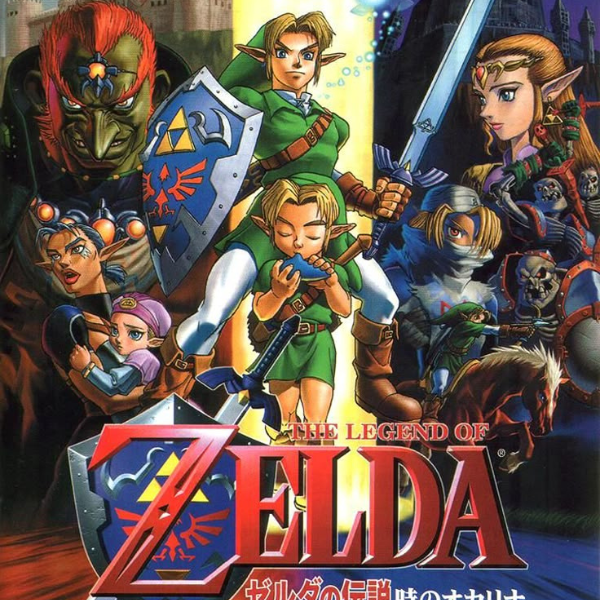
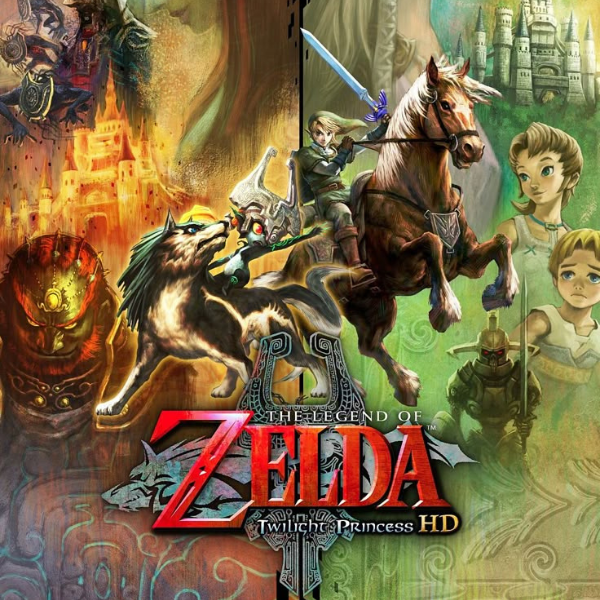
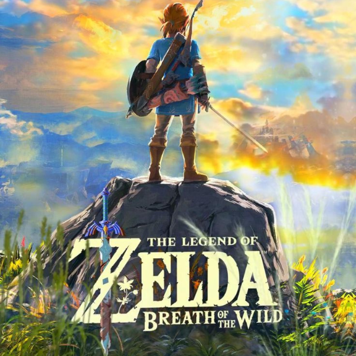
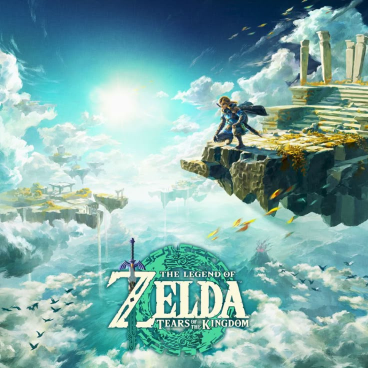

The Legend of Zelda (1986)

The Legend of Zelda: Ocarina of Time (1998)

The Legend of Zelda: Twilight Princess (2006)
Uma versão mais sombria de Zelda, onde Link se transforma em lobo e enfrenta criaturas do Reino do Crepúsculo.

The Legend of Zelda: Breath of the Wild (2017)
